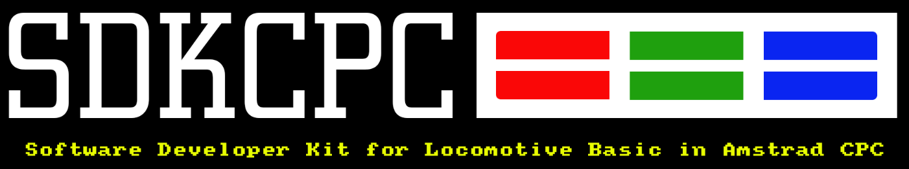

Instalación SDKCPC
sdkcpc es un software multiplataforma desarrollado en lenguaje Python. Para instalarlo en su sistema siga los siguientes pasos.
Software
Instalacion Python
El modulo sdkcpc funciona con cualquier version de Python igual o superior a la versión 3.6. Lo normal es que todas las maquinas actuales traigan dicho software ya instalado en el sistema. Para saber si realmente lo tenemos instalado en nuestra máquina bastara con ejecutar desde una ventana de CMD si usas windows o una de shell si usas Linux o MAC, el siguiente comando.
python3 --version
o
python --version
Dependiendo del sistema Operativo. El comando nos devolvera el número de version, si esta NO esta entre los parametros (=>3.6) procederemos a la instalación del software según nuestro sistema operativo. Para ello podemos seguir el siguiente Manual de Instalación.
Instalacion SDKCPC
Para instalar el modulo sdkcpc en python bastara con ejecutar el siguiente comando desde una ventana CMD/shell
pip3 install sdkcpc
o
pip install sdkcpc
Dependiendo del sistema operativo. Esto instalara el software y todas sus dependencias. Una vez finalizado comprobaremos que esta correcto ejecutando:
sdkcpc --version
Instalacion Visual Studio Code
Como IDE de desarrollo utilizaremos Visual Studio Code. Software gratuito y muy extendido que nos permitara programar en BASIC. Procederemos a su descarga e instalación según nuestro sistema operativo.
Extensiones para Visual Studio Code
Las extensiones de Visual Studio Code nos ayudaran a programar de una forma mas dinámica y amena. Las extensiones de sdkcpc son dos:
- sdkcpc-amstrad-basic-snippet
- sdkcpc-amstrad-basic-language
Para instalar las extensiones desde Visual Studio Code, pulsaremos sobre el boton Extensiones y buscaremos la que vamos a instalar.
